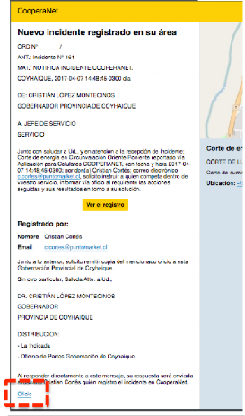

Acta de Reunión # 5

Imágenes de la reunión Fecha: 13, enero del 2017
Asunto: Presentación de versión final de la Aplicación - Presencial
Participantes:
Cristian López, Gobernador
Carolina Vásquez, Jefa Gabinete
Cristian Cortés, Jefe Modernizacion
Ricardo Coloma, E. Gestión Territorial
Angelo Barria, Consultor MCI
Objetivo de la reunión:
Demo versión final de la plataforma a Mesa Consultiva y Gobernación y dejar de manifiesto el levantamiento de las observaciones y modificaciones solicitadas con anterioridad.
Temas tratados:
Presentación y demo de la aplicación móvil funcional de CooperaNet
Instalación de Aplicativo CooperaNet en teléfonos de Jefes de Juntas de Vecinos
Cuenta de las Solicitudes de Modificación realizadas por la Contraparte Técnica de la Gobernación y Mesa Consultiva:
Cambiar iconos del home para la aplicación móvil
Cambiar colores y gráficas de la aplicación móvil
Cambio de Icono de CooperaNet
Generación automática de Oficio para agilizar el seguimiento de los incidentes hacia los actores
Eliminar la necesidad de escribir una dirección para el registro de incidente

Acta de Reunión # 5

Acuerdos:
La Mesa Consultiva y la contraparte Técnica de la Gobernación solicitan revisan las modificaciones solicitadas a la Aplicación Móvil:
Cambiar los iconos del home para la aplicación móvil
Cambiar colores y gráficas para diferenciar de aplicación web responsiva
Cambio de Icono de CooperaNet
Se cambió la gráfica de Home para App Móvil para incorporar 6 botones con las categorías principales, se eliminan las ultimas 5 notificaciones, las subcategorías quedan en el formulario y no como parte del home. Esto cambios aplican para solo para la aplicación móvil y no para la web responsiva.
Situación Original Situación Modificada
Eliminar la necesidad de escribir una dirección para el registro de incidente
Se cambia la lógica de iniciar el registro del incidente desde el registro de la calle a la ubicación del GPS del dispositivo.
Situación original requiere que el usuario ingrese una calle y dirección válida para
registrar el incidente.
Situación modificada se cambia el aplicativo para que intente detectar la ubicación a nivel de coordenadas (menos precisión en la información). Si el aplicativo no logra identificar las coordenadas desde el equipo móvil la ubicación por defecto será la plaza de Coyhaique.
Generación automática de Oficio para agilizar el seguimiento de los incidentes hacia los actores
Link en Notificación Correo
Se agrega un link al final de las notificaciones que genera un documento Word con el contenido del Oficio para el incidente registrado.
El equipo de la Gobernación modifica y completa la información del Oficio para que sea oficializado y distribuido fuera del contexto de la Aplicación CooperaNet.
Imagen del Archivo Word con el Oficio
